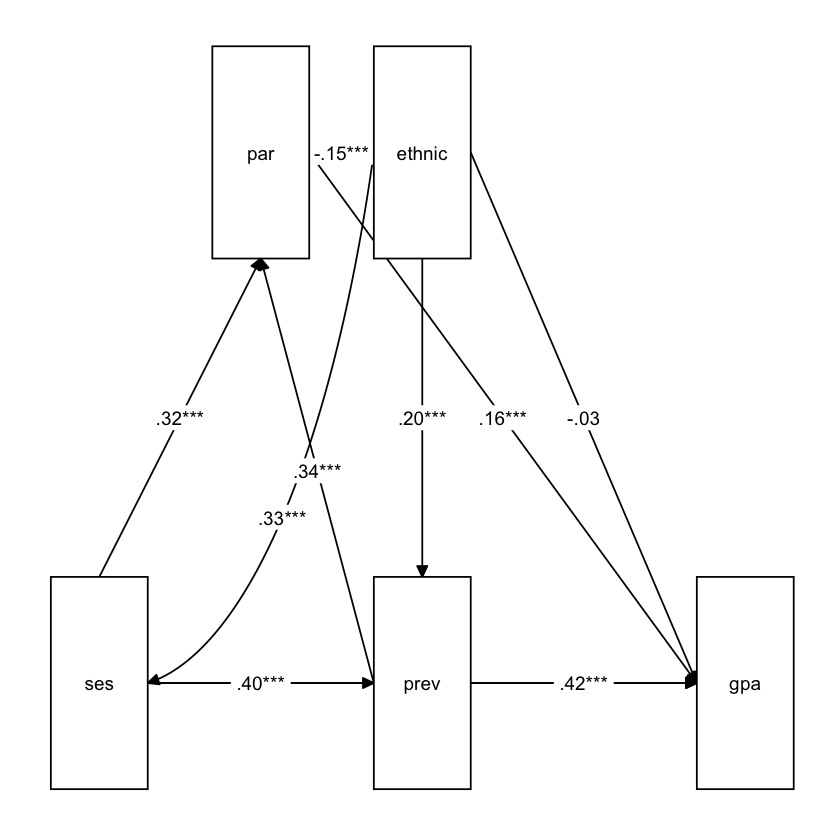

Load libraries
library(haven)
library(psych)
library(tidyverse)
library(lavaan)
library(semTools)
library(manymome)Multiple Regression and Beyond (3e) by Timothy Z. Keith
library(haven)
library(psych)
library(tidyverse)
library(lavaan)
library(semTools)
library(manymome)library(tidyverse)
# Load the data
nels <- read_csv("data/n=1000,stud & par shorter all miss blank.csv")
nels |> print()# A tibble: 1,000 x 93
stu_id sch_id sstratid sex race ethnic bys42a bys42b bys44a bys44b bys44c
<dbl> <dbl> <dbl> <dbl> <dbl> <dbl> <dbl> <dbl> <dbl> <dbl> <dbl>
1 124966 1249 1 2 4 1 3 4 2 4 4
2 124972 1249 1 1 4 1 4 5 1 3 3
3 175551 1755 1 2 3 0 NA 3 2 3 3
4 180660 1806 1 1 4 1 2 NA 1 4 4
5 180672 1806 1 2 4 1 2 3 1 4 3
6 298885 2988 2 1 3 0 5 4 2 3 3
# i 994 more rows
# i 82 more variables: bys44d <dbl>, bys44e <dbl>, bys44f <dbl>, bys44g <dbl>,
# bys44h <dbl>, bys44i <dbl>, bys44j <dbl>, bys44k <dbl>, bys44l <dbl>,
# bys44m <dbl>, bys48a <dbl>, bys48b <dbl>, bys79a <dbl>, byfamsiz <dbl>,
# famcomp <dbl>, bygrads <dbl>, byses <dbl>, byfaminc <dbl>, parocc <dbl>,
# bytxrstd <dbl>, bytxmstd <dbl>, bytxsstd <dbl>, bytxhstd <dbl>,
# bypared <dbl>, bytests <dbl>, par_inv <dbl>, f1s36a1 <dbl>, ...# SPSS data: labelled data
library(haven) # install.packages("haven")
nels_sav <- read_sav("data/n=1000,stud & par shorter.sav")
nels_sav |> print()# A tibble: 1,000 x 93
stu_id sch_id sstratid sex race ethnic bys42a bys42b bys44a
<dbl+lbl> <dbl+lbl> <dbl+lb> <dbl+l> <dbl+l> <dbl+l> <dbl+lb> <dbl+lb> <dbl+l>
1 124966 1249 1 2 [Fem~ 4 [Whi~ 1 [whi~ 3 [2-3~ 4 [3-4~ 2 [Agr~
2 124972 1249 1 1 [Mal~ 4 [Whi~ 1 [whi~ 4 [3-4~ 5 [4-5~ 1 [Str~
3 175551 1755 1 2 [Fem~ 3 [Bla~ 0 [blk~ NA 3 [2-3~ 2 [Agr~
4 180660 1806 1 1 [Mal~ 4 [Whi~ 1 [whi~ 2 [1-2~ NA 1 [Str~
5 180672 1806 1 2 [Fem~ 4 [Whi~ 1 [whi~ 2 [1-2~ 3 [2-3~ 1 [Str~
6 298885 2988 2 1 [Mal~ 3 [Bla~ 0 [blk~ 5 [4-5~ 4 [3-4~ 2 [Agr~
# i 994 more rows
# i 84 more variables: bys44b <dbl+lbl>, bys44c <dbl+lbl>, bys44d <dbl+lbl>,
# bys44e <dbl+lbl>, bys44f <dbl+lbl>, bys44g <dbl+lbl>, bys44h <dbl+lbl>,
# bys44i <dbl+lbl>, bys44j <dbl+lbl>, bys44k <dbl+lbl>, bys44l <dbl+lbl>,
# bys44m <dbl+lbl>, bys48a <dbl+lbl>, bys48b <dbl+lbl>, bys79a <dbl+lbl>,
# byfamsiz <dbl+lbl>, famcomp <dbl+lbl>, bygrads <dbl+lbl>, byses <dbl+lbl>,
# byfaminc <dbl+lbl>, parocc <dbl>, bytxrstd <dbl+lbl>, ...nels_sav$ethnic |> labelled::val_labels() |> print()blk,namer,hisp white-asian missing
0 1 8 variables: byses, bytests, par_inv, ffugrad, ethnic
Underrepresented ethnic minority, or URM, is coded so that students from African American, Hispanic, and Native backgrounds are coded 1 and students of Asian and Caucasian descent are coded 0.
nels_gpa <-
nels |>
select(ethnic, ses = byses, prev = bytests, par = par_inv, gpa = ffugrad) |>
na.omit()
nels_gpa |> print()# A tibble: 811 x 5
ethnic ses prev par gpa
<dbl> <dbl> <dbl> <dbl> <dbl>
1 1 -0.563 64.4 1.04 5.25
2 1 0.123 48.6 -0.0881 3
3 0 0.229 49.7 -0.390 2.5
4 1 0.687 46.6 0.199 6.5
5 1 0.633 54.9 0.975 4.25
6 0 0.992 38.5 -0.157 6
# i 805 more rowslibrary(psych)
nels_gpa |> lowerCor(digits = 3) ethnc ses prev par gpa
ethnic 1.000
ses 0.333 1.000
prev 0.330 0.461 1.000
par 0.075 0.432 0.445 1.000
gpa 0.131 0.299 0.499 0.364 1.000
library(lavaan)
library(semTools)
mod <- "
gpa ~ ethnic + ses + prev + par
par ~ prev + ses + ethnic
prev ~ ses + ethnic
"
sem_fit <- sem(model = mod, data = nels_gpa)
summary(sem_fit, standardized = TRUE, rsquare = TRUE) |> print()lavaan 0.6-18 ended normally after 1 iteration
Estimator ML
Optimization method NLMINB
Number of model parameters 12
Number of observations 811
Model Test User Model:
Test statistic 0.000
Degrees of freedom 0
Parameter Estimates:
Standard errors Standard
Information Expected
Information saturated (h1) model Structured
Regressions:
Estimate Std.Err z-value P(>|z|) Std.lv Std.all
gpa ~
ethnic -0.124 0.117 -1.058 0.290 -0.124 -0.035
ses 0.093 0.069 1.355 0.175 0.093 0.049
prev 0.070 0.006 11.414 0.000 0.070 0.417
par 0.292 0.064 4.531 0.000 0.292 0.160
par ~
prev 0.032 0.003 10.040 0.000 0.032 0.345
ses 0.333 0.036 9.351 0.000 0.333 0.321
ethnic -0.286 0.063 -4.528 0.000 -0.286 -0.146
prev ~
ses 4.431 0.362 12.236 0.000 4.431 0.395
ethnic 4.195 0.684 6.135 0.000 4.195 0.198
Variances:
Estimate Std.Err z-value P(>|z|) Std.lv Std.all
.gpa 1.521 0.076 20.137 0.000 1.521 0.724
.par 0.452 0.022 20.137 0.000 0.452 0.719
.prev 55.370 2.750 20.137 0.000 55.370 0.752
R-Square:
Estimate
gpa 0.276
par 0.281
prev 0.248
옵션들
ci: confidence intervalheader: 헤더 표시 여부nd: the number of digitssummary(sem_fit, standardized = TRUE, ci = TRUE, header = FALSE, nd = 2) |> print()
Parameter Estimates:
Standard errors Standard
Information Expected
Information saturated (h1) model Structured
Regressions:
Estimate Std.Err z-value P(>|z|) ci.lower ci.upper
gpa ~
ethnic -0.12 0.12 -1.06 0.29 -0.35 0.11
ses 0.09 0.07 1.36 0.18 -0.04 0.23
prev 0.07 0.01 11.41 0.00 0.06 0.08
par 0.29 0.06 4.53 0.00 0.17 0.42
par ~
prev 0.03 0.00 10.04 0.00 0.03 0.04
ses 0.33 0.04 9.35 0.00 0.26 0.40
ethnic -0.29 0.06 -4.53 0.00 -0.41 -0.16
prev ~
ses 4.43 0.36 12.24 0.00 3.72 5.14
ethnic 4.20 0.68 6.13 0.00 2.85 5.54
Std.lv Std.all
-0.12 -0.03
0.09 0.05
0.07 0.42
0.29 0.16
0.03 0.34
0.33 0.32
-0.29 -0.15
4.43 0.40
4.20 0.20
Variances:
Estimate Std.Err z-value P(>|z|) ci.lower ci.upper
.gpa 1.52 0.08 20.14 0.00 1.37 1.67
.par 0.45 0.02 20.14 0.00 0.41 0.50
.prev 55.37 2.75 20.14 0.00 49.98 60.76
Std.lv Std.all
1.52 0.72
0.45 0.72
55.37 0.75
표준화된 파라미터 추정치만 표시
standardizedSolution(sem_fit, type = "std.all") |> print() lhs op rhs est.std se z pvalue ci.lower ci.upper
1 gpa ~ ethnic -0.035 0.033 -1.058 0.290 -0.099 0.030
2 gpa ~ ses 0.049 0.036 1.357 0.175 -0.022 0.120
3 gpa ~ prev 0.417 0.034 12.127 0.000 0.349 0.484
4 gpa ~ par 0.160 0.035 4.565 0.000 0.091 0.228
5 par ~ prev 0.345 0.033 10.473 0.000 0.280 0.409
6 par ~ ses 0.321 0.033 9.873 0.000 0.258 0.385
7 par ~ ethnic -0.146 0.032 -4.583 0.000 -0.209 -0.084
8 prev ~ ses 0.395 0.029 13.605 0.000 0.338 0.452
9 prev ~ ethnic 0.198 0.032 6.288 0.000 0.136 0.260
10 gpa ~~ gpa 0.724 0.027 27.296 0.000 0.672 0.776
11 par ~~ par 0.719 0.026 27.781 0.000 0.668 0.770
12 prev ~~ prev 0.752 0.025 30.565 0.000 0.704 0.801
13 ethnic ~~ ethnic 1.000 0.000 NA NA 1.000 1.000
14 ethnic ~~ ses 0.333 0.000 NA NA 0.333 0.333
15 ses ~~ ses 1.000 0.000 NA NA 1.000 1.000파라미터 추정 방식: lavaan website
기본적으로 ML (Maximum Likelihood) 방법을 사용
estimator 옵션을 사용하여 변경부트스트랩(bootstrap) 방법을 사용한 표준오차 추정치
# MLR estimator
sem_fit <- sem(
model = mod,
data = nels_gpa,
estimator = "MLR"
)
summary(sem_fit, standardized = TRUE, header = F) |> print()
Parameter Estimates:
Standard errors Sandwich
Information bread Observed
Observed information based on Hessian
Regressions:
Estimate Std.Err z-value P(>|z|) Std.lv Std.all
gpa ~
ethnic -0.124 0.119 -1.044 0.297 -0.124 -0.035
ses 0.093 0.068 1.367 0.172 0.093 0.049
prev 0.070 0.006 11.554 0.000 0.070 0.417
par 0.292 0.068 4.282 0.000 0.292 0.160
par ~
prev 0.032 0.003 10.240 0.000 0.032 0.345
ses 0.333 0.035 9.491 0.000 0.333 0.321
ethnic -0.286 0.066 -4.333 0.000 -0.286 -0.146
prev ~
ses 4.431 0.363 12.211 0.000 4.431 0.395
ethnic 4.195 0.692 6.062 0.000 4.195 0.198
Variances:
Estimate Std.Err z-value P(>|z|) Std.lv Std.all
.gpa 1.521 0.073 20.851 0.000 1.521 0.724
.par 0.452 0.025 18.293 0.000 0.452 0.719
.prev 55.370 2.475 22.368 0.000 55.370 0.752
# Bootstrap
sem_fit <- sem(
model = mod,
data = nels_gpa,
estimator = "ML", # default
se = "bootstrap", # standard errors
bootstrap = 1000, # number of bootstrap samples
)summary(sem_fit, standardized = TRUE, header = F, ci = T) |> print()
Parameter Estimates:
Standard errors Bootstrap
Number of requested bootstrap draws 1000
Number of successful bootstrap draws 1000
Regressions:
Estimate Std.Err z-value P(>|z|) ci.lower ci.upper
gpa ~
ethnic -0.124 0.120 -1.031 0.303 -0.354 0.113
ses 0.093 0.070 1.328 0.184 -0.040 0.234
prev 0.070 0.006 11.472 0.000 0.059 0.083
par 0.292 0.066 4.407 0.000 0.165 0.422
par ~
prev 0.032 0.003 10.211 0.000 0.026 0.038
ses 0.333 0.034 9.746 0.000 0.267 0.401
ethnic -0.286 0.067 -4.279 0.000 -0.424 -0.154
prev ~
ses 4.431 0.377 11.745 0.000 3.682 5.161
ethnic 4.195 0.707 5.932 0.000 2.706 5.573
Std.lv Std.all
-0.124 -0.035
0.093 0.049
0.070 0.417
0.292 0.160
0.032 0.345
0.333 0.321
-0.286 -0.146
4.431 0.395
4.195 0.198
Variances:
Estimate Std.Err z-value P(>|z|) ci.lower ci.upper
.gpa 1.521 0.074 20.508 0.000 1.365 1.653
.par 0.452 0.024 18.823 0.000 0.400 0.494
.prev 55.370 2.477 22.351 0.000 50.331 60.256
Std.lv Std.all
1.521 0.724
0.452 0.719
55.370 0.752
tidySEM::graph_sem(sem_fit)
lavaanExtra::nice_tidySEM(sem_fit)
semPlot::semPaths(sem_fit, what = 'est', edge.label.cex = 1, fade = FALSE)


mod2 <- "
gpa ~ b1*ethnic + b2*ses + b3*prev + b4*par
par ~ b5*prev + b6*ses + b7*ethnic
prev ~ b8*ses + b9*ethnic
ses_par_gpa := b6*b4
"
sem_fit2 <- sem(model = mod2, data = nels_gpa)
summary(sem_fit2, standardized = TRUE, rsquare = TRUE) |> print()lavaan 0.6-18 ended normally after 1 iteration
Estimator ML
Optimization method NLMINB
Number of model parameters 12
Number of observations 811
Model Test User Model:
Test statistic 0.000
Degrees of freedom 0
Parameter Estimates:
Standard errors Standard
Information Expected
Information saturated (h1) model Structured
Regressions:
Estimate Std.Err z-value P(>|z|) Std.lv Std.all
gpa ~
ethnic (b1) -0.124 0.117 -1.058 0.290 -0.124 -0.035
ses (b2) 0.093 0.069 1.355 0.175 0.093 0.049
prev (b3) 0.070 0.006 11.414 0.000 0.070 0.417
par (b4) 0.292 0.064 4.531 0.000 0.292 0.160
par ~
prev (b5) 0.032 0.003 10.040 0.000 0.032 0.345
ses (b6) 0.333 0.036 9.351 0.000 0.333 0.321
ethnic (b7) -0.286 0.063 -4.528 0.000 -0.286 -0.146
prev ~
ses (b8) 4.431 0.362 12.236 0.000 4.431 0.395
ethnic (b9) 4.195 0.684 6.135 0.000 4.195 0.198
Variances:
Estimate Std.Err z-value P(>|z|) Std.lv Std.all
.gpa 1.521 0.076 20.137 0.000 1.521 0.724
.par 0.452 0.022 20.137 0.000 0.452 0.719
.prev 55.370 2.750 20.137 0.000 55.370 0.752
R-Square:
Estimate
gpa 0.276
par 0.281
prev 0.248
Defined Parameters:
Estimate Std.Err z-value P(>|z|) Std.lv Std.all
ses_par_gpa 0.097 0.024 4.077 0.000 0.097 0.051
library(manymome)
# All indirect paths from x to y
paths <- all_indirect_paths(sem_fit,
x = "ses",
y = "gpa"
)
paths |> print()Call:
all_indirect_paths(fit = sem_fit, x = "ses", y = "gpa")
Path(s):
path
1 ses -> par -> gpa
2 ses -> prev -> gpa
3 ses -> prev -> par -> gpa# Indirect effect estimates
ind_est <- many_indirect_effects(paths,
fit = sem_fit, R = 1000,
boot_ci = TRUE, boot_type = "bc"
)
ind_est |> print()
== Indirect Effect(s) ==
ind CI.lo CI.hi Sig
ses -> par -> gpa 0.097 0.058 0.154 Sig
ses -> prev -> gpa 0.312 0.243 0.386 Sig
ses -> prev -> par -> gpa 0.041 0.023 0.065 Sig
- [CI.lo to CI.hi] are 95.0% bias-corrected confidence intervals by
nonparametric bootstrapping with 1000 samples.
- The 'ind' column shows the indirect effects.
# Standarized estimates
ind_est_std <- many_indirect_effects(paths,
fit = sem_fit, R = 1000,
boot_ci = TRUE, boot_type = "bc",
standardized_x = TRUE,
standardized_y = TRUE
)
ind_est_std |> print()
== Indirect Effect(s) (Both x-variable(s) and y-variable(s) Standardized) ==
std CI.lo CI.hi Sig
ses -> par -> gpa 0.051 0.031 0.081 Sig
ses -> prev -> gpa 0.165 0.131 0.204 Sig
ses -> prev -> par -> gpa 0.022 0.012 0.034 Sig
- [CI.lo to CI.hi] are 95.0% bias-corrected confidence intervals by
nonparametric bootstrapping with 1000 samples.
- std: The standardized indirect effects.
mod_revised <- "
gpa ~ prev + par
par ~ prev + ses + ethnic
prev ~ ses + ethnic
"
sem_fit2 <- sem(model = mod_revised, data = nels_gpa)
summary(sem_fit2, standardized = TRUE, rsquare = TRUE) |> print()lavaan 0.6-18 ended normally after 1 iteration
Estimator ML
Optimization method NLMINB
Number of model parameters 10
Number of observations 811
Model Test User Model:
Test statistic 2.382
Degrees of freedom 2
P-value (Chi-square) 0.304
Parameter Estimates:
Standard errors Standard
Information Expected
Information saturated (h1) model Structured
Regressions:
Estimate Std.Err z-value P(>|z|) Std.lv Std.all
gpa ~
prev 0.071 0.006 12.589 0.000 0.071 0.421
par 0.323 0.061 5.288 0.000 0.323 0.177
par ~
prev 0.032 0.003 10.040 0.000 0.032 0.345
ses 0.333 0.036 9.351 0.000 0.333 0.321
ethnic -0.286 0.063 -4.528 0.000 -0.286 -0.146
prev ~
ses 4.431 0.362 12.236 0.000 4.431 0.395
ethnic 4.195 0.684 6.135 0.000 4.195 0.198
Variances:
Estimate Std.Err z-value P(>|z|) Std.lv Std.all
.gpa 1.525 0.076 20.137 0.000 1.525 0.726
.par 0.452 0.022 20.137 0.000 0.452 0.719
.prev 55.370 2.750 20.137 0.000 55.370 0.752
R-Square:
Estimate
gpa 0.274
par 0.281
prev 0.248
nels_full <- read_csv("data/n=1000,stud & par_3.csv")
nels_hw <-
nels_full |>
select(ethnic, ses = byses, prev = bytests, gpa = ffugrad, hw = homewk)
nels_hw |> lowerCor(digits = 3) ethnc ses prev gpa hw
ethnic 1.000
ses 0.344 1.000
prev 0.334 0.484 1.000
gpa 0.143 0.294 0.486 1.000
hw 0.143 0.316 0.350 0.325 1.000